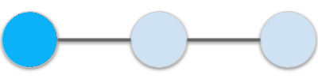
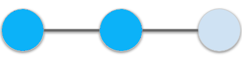
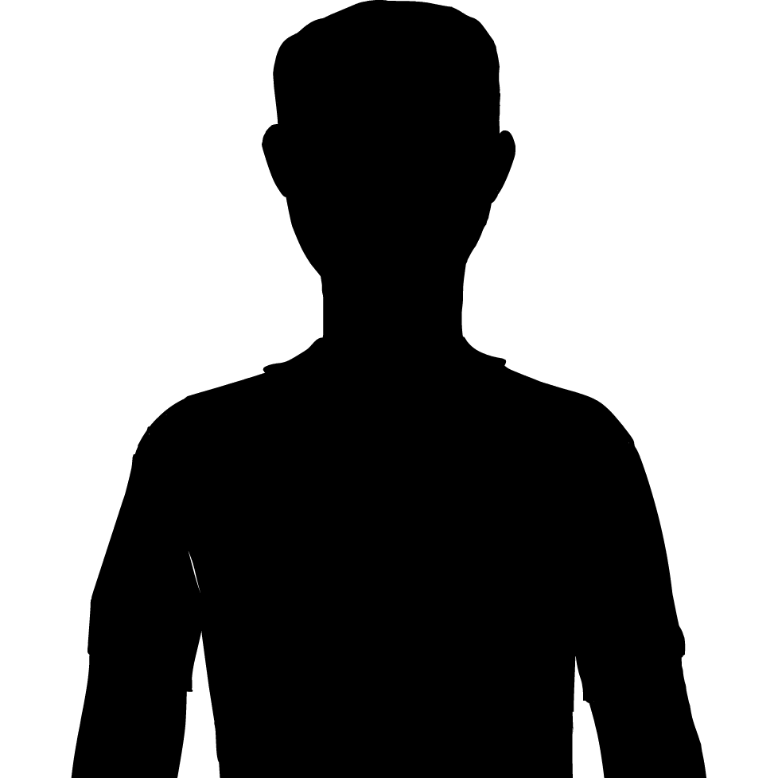
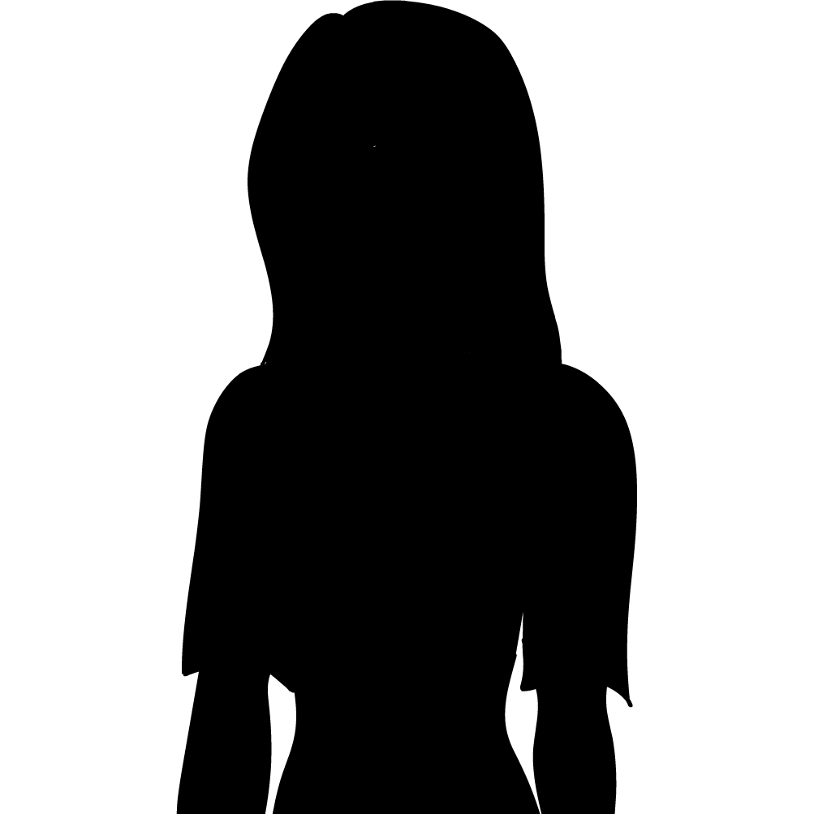
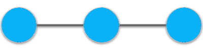

You will now create an avatar to represent you in this simulation.
On the next page, you can begin customizing your avatar.
Click "Next" when you are ready to create your avatar.
Next ⮕

Please select a figure for your avatar, then click "Next".


Next ⮕
✖
Done ✔
✖
Done ✔
✖
Done ✔
✖
Done ✔

Create Your Avatar
Select your avatar’s physical traits below.
When you are done, click "Done".
Eye 1
Hair 1
Select Hair Color
Select Eye Color
Select Skin Color
Select Outfit Color
⬅ Back to Figure Selection
Done ⮕